前面的部分介绍了卷积神经网络的原理以及怎么使用theano的自动梯度来实现卷积神经网络，这篇文章将继续介绍卷积神经网络相关内容。
首先会介绍DropOut和Batch Normalization技术，dropout可以提高模型的泛化能力。而Batch Normalization是加速训练收敛速度的非常简单但又好用的一种实用技术，我们会通过cs231n的作业2来实现DropOut和Batch Normalization。
然后我们再完成作业2的另外一部分——通过计算图分解实现卷积神经网络。
接下来是简单的介绍使用caffe来训练imagenet的技术已经怎么在python里使用caffe，这些技术在后面会用到。
作为卷积神经网络的最后一篇文章，我们最后会简单的介绍一下图像分类的一些最新技术，包括极深度的ResNet(152层的ResNet)，Inception。
前面我们也讨论过来了，训练神经网络我们一般使用mini-batch的sgd算法，使用mini-batch而不是一个样本的好处是作为全部样本的采样，一个mini-batch的“随机”梯度和batch的梯度方向更接近（当然这是相对于一个训练样本来说的）；另外一个好处是使用一个mini-batch的数据可以利用硬件的数据并行能力。比如通常的batch是几十到几百，而且为了利用数据并行的lib如blas或者GPU，一般都是8的倍数，比如16或者128这样的数字。
根据之前我们训练全连接网络的经验（如果读者网络可以再回归一下我们之前的文章，训练一个5层的全连接网络来识别cifar10的图片，要调到50%以上的准确率的例子，参考 自动梯度求解——使用自动求导实现多层神经网络 ），要想让训练能收敛，选择合适的超参数如learning_rate或者参数的初始化非常重要，如果选择的值不合适，很可能无法收敛。当然使用更好的算法如momentum或者adam等可以让算法更容易收敛，但是对于很深的网络依然很难训练。
因为层次越多，error往前传播就越小，而且很多神经元会“saturation”。比如sigmoid激活函数在|x|比较小的时候图像解决直线y=x，从而梯度是1，但随着|x|变大，梯度变得很小，从而参数的delta就非常小，参数变化很小。使用ReLU这样的激活函数能缓解saturation的问题，但是还有“internal covariate shift”的问题（接下来会介绍这个问题）依然很难解决。而Batch Normalization就能解决这个问题同时也能解决saturation的问题。
Batch Normalization是Google的Sergey Ioffe 和 Christian Szegedy提出的，相同的网络结构，使用这种方法比原始的网络训练速度要提高14倍。作者通过训练多个模型的ensemble，在ImageNet上的top5分类错误率降到了4.8%。
假设一个模型的输入是X（比如在MNIST任务，X是一个784的向量），输出是Y（比如MNIST是0-9的10个类别）。很多Discriminative 模型学到的是P(Y|X)，神经网络也是这样的模型。而covariate shift问题是由于训练数据的领域模型
乍一看这个应该不是什么问题。毕竟我们的目标是分类，只要
问题的关键是我们训练的模型一般都是参数化的模型
比如说我这个模型在
现在问题来了，如果训练数据中Ps(X)和测试数据Pt(X)不一样，那么就会带来问题。举一个极端的例子，假设我们的X只有两种取值数据1和数据2，他们的类别是不同的，但是我们的feature很不好，根本没法区分出X1和X2来，也就是说X1=X2。因此我们的模型肯定无法正确的分类出数据1和数据2来。但是我们的模型必须做出选择，那怎么选择呢？当然要看P(X1)和P(X2)哪个大，我们尽量把出现概率大的那个分对。如训练的时候数据1出现的概率大，那么我们的分类器会把他分类成数据1的类别。但是如果我们测试的数据确实数据2的概率大，那么我们的模型就会有问题。
解决这个问题的方法有很多，其中一种思路是重新训练一个新的模型，对训练数据进行”加权“。不过这和我们的Batch Normalization关系不大，就不展开了。介绍它的目的是让大家知道有这样一个问题，如果在实际的工作中碰到训练数据的分布和测试数据的分布不一样，要想想这个会不会带来问题。
通过前面的分析，我们知道如果训练时和测试时输入的分布变化，会给模型带来问题。当然在日常的应用中，这个问题一般不会太明显，因为一般情况数据的分布差别不会太大（尤其是P(Y|X)不会，否则之前的训练数据完全没法用了，可以认为是两个不同的任务了），但是在很深的网络里这个问题会带来问题，使得训练收敛速度变慢。因为前面的层的结果会传递到后面的层，而且层次越多，前面的细微变化就会带来后面的巨大变化。如果某一层的输入分布总是变化的话，那么它就会无所适从，很难调整好参数。我们一般会对输入数据进行”白化“除理，使得它的均值是0，方差是1。但是之后的层就很难保证了，因为随着前面层参数的调整，后面的层的输入是很难保证的。比较坏的情况是，比如最后一层，经过一个minibatch，把参数调整好的比之前好一些了，但是它之前的所有层的参数也都变了，从而导致下一轮训练的时候输入的范围都发生变化了，那么它肯定就很难正确的分类了。这就是所谓的internal covariate shift。
那怎么能解决这个问题呢？如果我们能保证每次minibatch时每个层的输入数据都是均值0方差1，那么就可以解决这个问题。因此我们可以加一个batch normalization层对这个minibatch的数据进行处理。但是这样也带来一个问题，把某个层的输出限制在均值为0方差为1的分布会使得网络的表达能力变弱。因此作者又给batch normalization层进行一些限制的放松，给它增加两个可学习的参数
Batch Normalization的算法很简单，如下图所示：
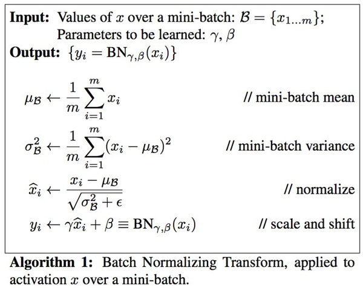
我们训练时使用一个minibatch的数据，因此可以计算均值和方差，但是预测时一次只有一个数据，所以均值方差都是0，那么BN层什么也不干，原封不动的输出。这肯定会用问题，因为模型训练时都是进过处理的，但是测试时又没有，那么结果肯定不对。
解决的方法是使用训练的所有数据，也就是所谓的population上的统计。原文中使用的就是这种方法，不过这需要训练完成之后在多出一个步骤。另外一种常见的办法就是基于momentum的指数衰减，这种方法就是我们下面作业要完成的算法。
公式如下：
running_mean = momentum * running_mean + (1 - momentum) * sample_mean
running_var = momentum * running_var + (1 - momentum) * sample_var
如果读者做过滤波，这和低通滤波器类似。每次更新时把之前的值衰减一点点（乘以一个momentum，一般很大，如0.9,0.99），然后把当前的值加一点点进去(1-momentum)。
当然极端的情况下这种方法计算出来的值和实际的平均值是有差异的，比如如下例子
100, 100, 100 , … 1, 1, 1
比如有两百个数据，100个100和100个1，那么平均值应该是55.5。如果采样不好的话，前面全是100，后面全是1，那么用这种算法计算的就接近1。反之如果前面全部是1，后面全是100，那么结果就接近100。当然一般情况我们的采样是均匀的，那么计算出来就是解决55.5。
安装参考 这里。之前的文章也有介绍，请参考。包括数据的下载（cifar10有100多M）和cpython扩展的安装。安装好之后运行 ipython notebook打开BatchNormalization.ipybn
第一个直接运行就可以了。如果运行有问题，可能是需要的lib没有安装好，如果提示cython的问题，记得python setup.py build_ext –inplace。如果运行cell2找不到cifar10数据，可能是路径问题，简单的办法是修改data_utils.py，改成绝对路径就行了，请参考我下面的例子。
def get_CIFAR10_data(num_training=49000, num_validation=1000, num_test=1000):
"""
Load the CIFAR-10 dataset from disk and perform preprocessing to prepare
it for classifiers. These are the same steps as we used for the SVM, but
condensed to a single function.
"""
# Load the raw CIFAR-10 data
cifar10_dir = '/home/mc/cs231n/assignment2/cs231n/datasets/cifar-10-batches-py'
def batchnorm_forward(x, gamma, beta, bn_param):
"""
输入:
- x: 输入数据 shape (N, D)
- gamma: 缩放参数 shape (D,)
- beta: 平移参数 shape (D,)
- bn_param: 包含如下参数的dict:
- mode: 'train' or 'test'; 用来区分训练还是测试
- eps: 除以方差时为了防止方差太小而导致数值计算不稳定
- momentum: 前面讨论的momentum.
- running_mean: 数组 shape (D,) 记录最新的均值
- running_var 数组 shape (D,) 记录最新的方差
返回一个tuple:
- out: shape (N, D)
- cache: 缓存反向计算时需要的变量
"""
mode = bn_param['mode']
eps = bn_param.get('eps', 1e-5)
momentum = bn_param.get('momentum', 0.9)
N, D = x.shape
running_mean = bn_param.get('running_mean', np.zeros(D, dtype=x.dtype))
running_var = bn_param.get('running_var', np.zeros(D, dtype=x.dtype))
out, cache = None, None
if mode == 'train':
#############################################################################
# TODO: Implement the training-time forward pass for batch normalization. #
# Use minibatch statistics to compute the mean and variance, use these #
# statistics to normalize the incoming data, and scale and shift the #
# normalized data using gamma and beta. #
# #
# You should store the output in the variable out. Any intermediates that #
# you need for the backward pass should be stored in the cache variable. #
# #
# You should also use your computed sample mean and variance together with #
# the momentum variable to update the running mean and running variance, #
# storing your result in the running_mean and running_var variables. #
#############################################################################
x_mean=x.mean(axis=0)
x_var=x.var(axis=0)
x_normalized=(x-x_mean)/np.sqrt(x_var+eps)
out = gamma * x_normalized + beta
running_mean = momentum * running_mean + (1 - momentum) * x_mean
running_var = momentum * running_var + (1 - momentum) * x_var
cache = (x, x_mean, x_var, x_normalized, beta, gamma, eps)
#############################################################################
# END OF YOUR CODE #
#############################################################################
elif mode == 'test':
#############################################################################
# TODO: Implement the test-time forward pass for batch normalization. Use #
# the running mean and variance to normalize the incoming data, then scale #
# and shift the normalized data using gamma and beta. Store the result in #
# the out variable. #
#############################################################################
x_normalized = (x - running_mean)/np.sqrt(running_var +eps)
out = gamma*x_normalized + beta
#############################################################################
# END OF YOUR CODE #
#############################################################################
else:
raise ValueError('Invalid forward batchnorm mode "%s"' % mode)
# Store the updated running means back into bn_param
bn_param['running_mean'] = running_mean
bn_param['running_var'] = running_var
return out, cache
代码其实比较简单，首先是使用numpy.mean和var计算这个minibatch的均值和方差，然后计算x_normalized，然后用gamma和beta对x_normalized进行缩放和平移。为了防止sqrt(running_var)下溢到0导致除以零，我们除以np.sqrt(running_var_+ eps)
上面是训练的代码，测试时我们直接使用running_mean和running_var而不需要通过minibatch计算。
最后，我们吧当前的running_mean和running_var更新到bn_param里，以便下次minibatch训练时使用。
下图是运行的结果：
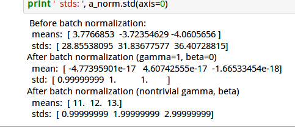
如果After batch normalization(gamma=1, beta=0)，我们得到的mean接近0【比如图中10的负18次方】，std接近1。那么说明我们的代码没有问题。
我们上面已经实现了test时的代码，直接运行，得到类似下图的结果：
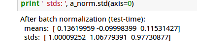
这次的结果means接近0，方差接近1。不过因为使用的是全局的均值和方差，所以随机性要比之前大。
接下来我们实现反向梯度的计算，打开layers.py实现batchnorm_backward函数。
如果对计算图还不了解的读者可以参考
自动梯度求解——cs231n的notes
和
自动梯度求解——使用自动求导实现多层神经网络
(x, x_mean, x_var, x_normalized, beta, gamma, eps) = cache
N = x.shape[0]
dbeta = np.sum(dout, axis=0)
dgamma = np.sum(x_normalized*dout, axis = 0)
dx_normalized = gamma* dout
dx_var = np.sum(-1.0/2*dx_normalized*(x-x_mean)/(x_var+eps)**(3.0/2), axis =0)
dx_mean = np.sum(-1/np.sqrt(x_var+eps)* dx_normalized, axis = 0) + 1.0/N*dx_var *np.sum(-2*(x-x_mean), axis = 0)
dx = 1/np.sqrt(x_var+eps)*dx_normalized + dx_var*2.0/N*(x-x_mean) + 1.0/N*dx_mean
前面的函数参数说明和返回值就不贴了，上面是我们需要补充的代码
首先是从cache里恢复所有的中间变量，顺序和前面的forward一致。
从x.shape里取得batchSize N，后面会用到。
计算dbeta和dgamma，我们根据下面的式子
out = gamma * x_normalized + beta
可以得到：
dbeta = np.sum(dout, axis=0)
dgamma = np.sum(x_normalized*dout, axis = 0)
dx_normalized = gamma* dout
注意，前面的gamma*x_mormalized使用了broadcasting，gamma是一个数，而x_normalized是一个向量，所以求梯度时需要求和，加上beta也是同样的道理。
根据式子：
x_normalized=(x-x_mean)/np.sqrt(x_var+eps)
我们简单的推导一下：
因此可以得到dx_var：
dx_var = np.sum(-1.0/2*dx_normalized*(x-x_mean)/(x_var+eps)**(3.0/2), axis =0)
np.sum的原因和上面是一样的。
和上面类似，读者可能很快能推导出下面的代码：
dx_mean = np.sum(-1/np.sqrt(x_var+eps)* dx_normalized, axis = 0)
不过如果细心的读者和前面的代码对比，发现会少了一部分，为什么呢？
从
x_normalized=(x-x_mean)/np.sqrt(x_var+eps)
看，x_mean似乎只影响x_normalized，但是请注意这行代码：
x_var=x.var(axis=0)
回忆一下方差的定义
我可以看到x_mean还是会影响x_var的。
所以得到另外一部分：
1.0/N*dx_var *np.sum(-2*(x-x_mean), axis = 0)
x影响的变量是：
x_mean=x.mean(axis=0)
x_var=x.var(axis=0)
x_normalized=(x-x_mean)/np.sqrt(x_var+eps)
所以dx也分为3部分：
所以dx的一部分等于 1/N*dx_mean
同样的对于方差部分，我们可以得到dx_var
2.0/N
(x-x_mean)
最后是
x_normalized=(x-x_mean)/np.sqrt(x_var+eps)
我们可以计算得到1/np.sqrt(x_var+eps)*dx_normalized
三部分加起来就是dx
完成代码后我们执行cell5得到如下的结果：
我们实现一个更优化的方案。【注，我们前面的实现已经还比较优化了，这个作业的初衷是让我们用更”原始“的计算图分解，比如把np.mean分解成加法和除法，有兴趣的读者可以参考
Understanding the backward pass through Batch Normalization Layer
，然后再优化成我们的版本】
不过我们的代码还有一个地方可以优化的，我们看看
dvar的第二项： 1.0/N
dx_var
np.sum(-2
(x-x_mean), axis = 0)
这一项等于0。为什么？我们举个实际的例子好了。
为了简化，我们假设x是1
D的(batchSize=1)。
x=[1,2,3] x_mean=1/3(1+2+3)=2
那么 (1-x_mean) + (2-x_mean) + (3-x_mean)=(1+2+3)- xMean*3=0
也就是对x减去x的均值然后求和等于0
所以我们可以把这一项去掉。
运行cell6，这点代码会比较两个算法的diff，应该是0。

我们的代码dbeta和dgamma是完全一样的，但是dvar不同，从而导致dx有细微的差异【计算的舍入误差】
修改fc_net.py的FullyConnectedNet类让它支持batch normalization
在fc_net.py里定义affine_bn_relu_forward和affine_bn_relu_backward函数
def affine_bn_relu_forward(x, w, b, gamma, beta, bn_param):
affine_out, fc_cache = affine_forward(x, w, b)
bn_out, bn_cache = batchnorm_forward(affine_out, gamma, beta, bn_param)
relu_out, relu_cache = relu_forward(bn_out)
cache = (fc_cache, bn_cache, relu_cache)
return relu_out, cache
def affine_bn_relu_backward(dout, cache):
fc_cache, bn_cache, relu_cache = cache
drelu_out = relu_backward(dout, relu_cache)
dbn_out, dgamma, dbeta = batchnorm_backward(drelu_out, bn_cache)
dx, dw, db = affine_backward(dbn_out, fc_cache)
return dx, dw, db, dgamma, dbeta
代码和之前的affine_relu_forward/backward类似，这里不再赘述。
在这个函数里增加batch_normalization相关参数的初始化，注意最后一层是不需要batch normalization的。
for i in range(1, self.num_layers + 1):
if use_batchnorm and i != self.num_layers:
self.params['beta' + str(i)] = np.zeros(layer_output_dim)
self.params['gamma' + str(i)] = np.ones(layer_output_dim)
首先在最上面增加 affine_bn_relu_cache = {}
然后是训练的forward部分代码的修改【注意和以前代码的比较，以前的代码没有else部分】
for i in range(1, self.num_layers):
keyW = 'W' + str(i)
keyb = 'b' + str(i)
if not self.use_batchnorm:
current_input, affine_relu_cache[i] = affine_relu_forward(current_input, self.params[keyW], self.params[keyb])
else:
key_gamma = 'gamma' + str(i)
key_beta = 'beta' + str(i)
current_input, affine_bn_relu_cache[i] = affine_bn_relu_forward(current_input, self.params[keyW],
self.params[keyb],
self.params[key_gamma], self.params[key_beta],
self.bn_params[i - 1])
最后是训练的backward部分的代码修改
for i in range(self.num_layers - 1, 0, -1):
if not self.use_batchnorm:
affine_dx, affine_dw, affine_db = affine_relu_backward(affine_dx, affine_relu_cache[i])
else:
affine_dx, affine_dw, affine_db, dgamma, dbeta = affine_bn_relu_backward(affine_dx, affine_bn_relu_cache[i])
grads['beta' + str(i)] = dbeta
grads['gamma' + str(i)] = dgamma
然后我们运行这个cell，梯度的误差应该很小。
接下来我们训练一个6层的全连接网络，分别测试用batch norm和不用的效果
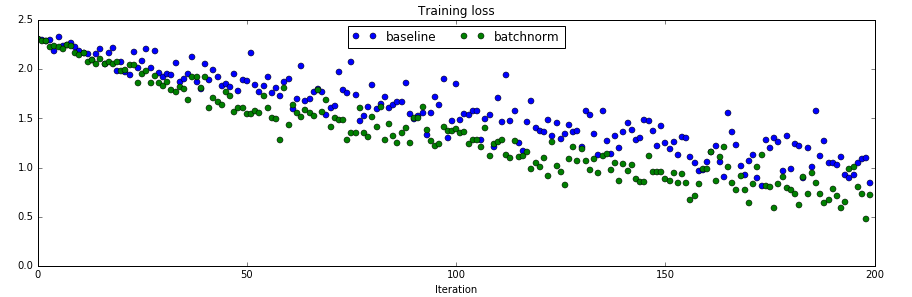
训练loss的对比
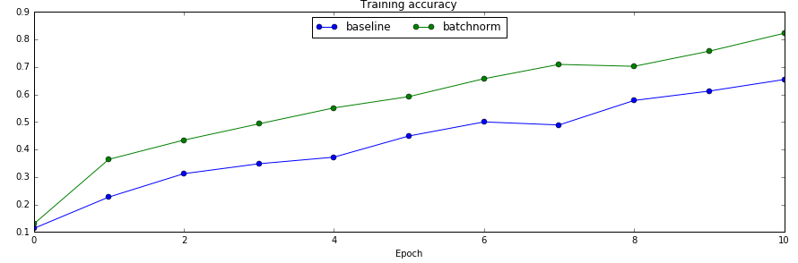
训练集上的准确率对比

验证集上的对比
从对比实验可以看出，使用了batch normalization收敛速度确实变快了。
我们最后对比一下是否使用batch norm是否能让训练与参数初始化不那么敏感。因为我们之前的经验，参数的初始化会极大影响到最后训练的结果，这让模型训练变得很tricky，我们需要不断的尝试才能找到比较好的初始化参数。我们前面说过，batch norm可以让这个问题得到缓解，那么我们来验证一下。
运行这两个cell的效果如下图：

训练数据的最高准确率
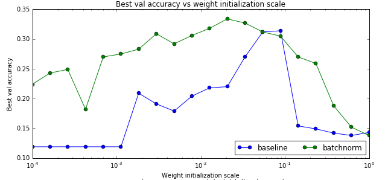
测试数据的最高准确率

最终的最高准确率
从上面的图可以看出，确实使用了bn后参赛初始化的问题变得好一些了【当然不会完全解决】。另外最后一个图不使用batch norm的baseline对于初始化过大的参数会出现不能训练的情况，因此图中有部分不能绘制。
原理我们在之前都介绍过了，这里我们看怎么实现。
打开ConvolutionalNetworks.ipynb，运行cell1和2
打开layers.py，实现conv_forward_naive里的缺失代码：
N, C, H, W = x.shape
F, _, HH, WW = w.shape
stride = conv_param['stride']
pad = conv_param['pad']
H_out = 1 + (H + 2 * pad - HH) / stride
W_out = 1 + (W + 2 * pad - WW) / stride
out = np.zeros((N,F,H_out,W_out))
# Pad the input
x_pad = np.zeros((N,C,H+2*pad,W+2*pad))
for n in range(N):
for c in range(C):
x_pad[n,c] = np.pad(x[n,c],(pad,pad),'constant', constant_values=(0,0))
for n in range(N):
for i in range(H_out):
for j in range(W_out):
current_x_matrix = x_pad[n, :, i * stride: i * stride + HH, j * stride:j * stride + WW]
for f in range(F):
current_filter = w[f]
out[n,f,i,j] = np.sum(current_x_matrix*current_filter)
out[n,:,i,j] = out[n,:,i,j]+b
我们来逐行来阅读上面的代码
首先输入x的shape是(N, C, H, W)，N是batchSize，C是输入的channel数，H和W是输入的Height和Width。
参数w的shape是(F, C, HH, WW)，F是Filter的个数，HH是Filter的Height，WW是Filter的Width
从conv_param里读取stride和pad。
计算输出的H_out和W_out
定义输出的变量out，它的shape是(N, F, H_out, W_out)
对x进行padding，所谓的padding，就是在一个矩阵的四角补充0。
首先我们来熟悉一下numpy.pad这个函数。
In [19]: x=np.array([[1,2],[3,4],[5,6]])
In [20]: x
Out[20]:
array([[1, 2],
[3, 4],
[5, 6]])
首先我们定义一个3*2的矩阵
然后给它左上和右下都padding1个0。
In [21]: y=np.pad(x,(1,1),'constant', constant_values=(0,0))
In [22]: y
Out[22]:
array([[0, 0, 0, 0],
[0, 1, 2, 0],
[0, 3, 4, 0],
[0, 5, 6, 0],
[0, 0, 0, 0]])
我们看到3*2的矩阵的上下左右都补了一个0。
我们也可以只给左上补0：
In [23]: y=np.pad(x,(1,0),'constant', constant_values=(0,0))
In [24]: y
Out[24]:
array([[0, 0, 0],
[0, 1, 2],
[0, 3, 4],
[0, 5, 6]])
了解了pad函数之后，上面的代码就很容易阅读了。对于每一个样本，对于每一个channel，这都是一个二位的数组，我们根据参数pad对它进行padding
这几行代码就是按照卷积的定义：对于输出的每一个样本(for n in range(N))，对于输出的每一个下标i和j，我们遍历所有F个filter，首先找到要计算的局部感知域：
current_x_matrix = x_pad[n,:, i*stride: i*stride+HH, j*stride:j*stride+WW]
这会得到一个(C, HH, WW)的ndarray，也就是下标i和j对应的。
然后我们把这个filter的参数都拿出来：
current_filter = w[f]
它也是(C, HH, WW)的ndarray。
然后对应下标乘起来，最后加起来。
如果最简单的实现，我们还应该加上bias
out[n,f,i,j]+=b[f]
这也是可以的，但是为了提高运算速度，我们可以把所有filter的bias一次用向量加法实现，也就是上面代码的方式。
其中烦琐的地方就是怎么通过slice得到当前的current_x_matrix。不清楚的地方可以参考下图：

关于上面的4个for循环，其实还有一种等价而且看起来更自然的实现：
for n in range(N):
for f in range(F):
current_filter = w[f]
for i in range(H_out):
for j in range(W_out):
current_x_matrix = x_pad[n, :, i * stride: i * stride + HH, j * stride:j * stride + WW]
out[n, f, i, j] = np.sum(current_x_matrix * current_filter)
out[n, f, i, j] = out[n, f, i, j] + b[f]
为什么不用这种方式呢？
首先这种方式bias没有办法写出向量的形式了，其次我觉得最大的问题是切片操作次数太多，对于这种方式，current_x_matrix从x_pad切片的调用次数是N
F
H_out*W_out。切片会访问不连续的内存，这是会极大影响性能的。
通过卷积实现图像处理。
这个cell通过卷积来进行图像处理，实现到灰度图的转化和边缘检测。这一方面可以验证我们之前的算法，另外也可以演示卷积可以提取一些特征。
实现灰度图比较简单，每个像素都是
用一个卷积来实现就是：
w[0, 0, :, :] = [[0, 0, 0], [0, 0.3, 0], [0, 0, 0]]
w[0, 1, :, :] = [[0, 0, 0], [0, 0.6, 0], [0, 0, 0]]
w[0, 2, :, :] = [[0, 0, 0], [0, 0.1, 0], [0, 0, 0]]
而下面的filter是一个sobel算子，用来检测水平的边缘：
w[1, 0, :, :] =0
w[1, 1, :, :] =0
w[1, 2, :, :] = [[1, 2, 1], [0, 0, 0], [-1, -2, -1]]
感兴趣的读者可以参考
sobel operator
读者可能问了，这么做有什么意义？这个例子想说明的是卷积能够做一些图像处理的事情，而通过数据的驱动，是可以(可能)学习出这样的特征的。而在深度学习之前，很多时候是人工在提取这些特征。以前做图像识别，需要很多这样的算子，需要很多图像处理的技术，而现在就不需要那么多了。
这个cell不需要实现什么代码，直接运行就好了

代码如下：
x, w, b, conv_param = cache
stride = conv_param['stride']
pad = conv_param['pad']
N, C, H, W = x.shape
F, _, HH, WW = w.shape
_,_,H_out,W_out = dout.shape
x_pad = np.zeros((N,C,H+2*pad,W+2*pad))
for n in range(N):
for c in range(C):
x_pad[n,c] = np.pad(x[n,c],(pad,pad),'constant', constant_values=(0,0))
db = np.zeros((F))
dw = np.zeros(w.shape)
dx_pad = np.zeros(x_pad.shape)
for n in range(N):
for i in range(H_out):
for j in range(W_out):
current_x_matrix = x_pad[n, :, i * stride: i * stride + HH, j * stride:j * stride + WW]
for f in range(F):
dw[f] = dw[f] + dout[n,f,i,j]* current_x_matrix
dx_pad[n,:, i*stride: i*stride+HH, j*stride:j*stride+WW] += w[f]*dout[n,f,i,j]
db = db + dout[n,:,i,j]
dx = dx_pad[:,:,pad:H+pad,pad:W+pad]
代码和forward很像，首先是把cache里的值取出来。由于x_pad没有放到cache里，这里还需要算一遍，当然也可以修改上面的forward，这样避免padding。
然后定义db,dw,dx_pad
最后是和forward完全一样的一个4层for循环，区别是：
#forward
current_x_matrix = x_pad[n, :, i * stride: i * stride + HH, j * stride:j * stride + WW]
out[n,f,i,j] = np.sum(current_x_matrix* w[f])
#backward
dw[f] += dout[n,f,i,j]*current_x_matrix
dx_pad[....]+=dout * w[f]
这里的小小技巧就是 z=np.sum(matrix1*matrix2)，怎么求dz/dmatrix1。
答案就是matrix2。
所以写出矩阵的形式就是dz/matrix1=matrix2。
我们运行一下这个cell，如果相对误差小于10的-9次方，那么我们的实现就是没有问题的。
N, C, H, W = x.shape
pool_height = pool_param['pool_height']
pool_width = pool_param['pool_width']
stride = pool_param['stride']
H_out = 1 + (H - pool_height) / stride
W_out = 1 + (W - pool_width) / stride
out = np.zeros((N,C,H_out,W_out))
for n in range(N):
for c in range(C):
for h in range(H_out):
for w in range(W_out):
out[n,c,h,w] = np.max(x[n,c, h*stride:h*stride+pool_height, w*stride:w*stride+pool_width])
max_pool的forward非常简单，就是在对应的局部感知域里选择最大的那个数就行。
x, pool_param = cache
pool_height = pool_param['pool_height']
pool_width = pool_param['pool_width']
stride = pool_param['stride']
N, C, H_out, W_out = dout.shape
dx = np.zeros(x.shape)
for n in range(N):
for c in range(C):
for h in range(H_out):
for w in range(W_out):
current_matrix = x[n, c, h * stride:h * stride + pool_height, w * stride:w * stride + pool_width]
max_idx = np.unravel_index(np.argmax(current_matrix),current_matrix.shape)
dx[n, c, h * stride + max_idx[0], w * stride + max_idx[1]] += dout[n, c, h, w]
backward也很简单，就是最大的局部感知域最大的那个dx是1，其余的是0。为了提高效率，其实forward阶段是可以”记下“最大的那个下标，这里是重新计算的。
稍微注意一下就是np.argmax返回的是最大的下标，是把2维数组展开成一维的下标，为了变成二维数组的下标，我们需要用unravel_index这个函数。
In [3]: x
Out[3]:
array([[1, 2, 3],
[4, 5, 6]])
In [5]: x.argmax()
Out[5]: 5
In [6]: ind = np.unravel_index(np.argmax(x),x.shape)
In [7]: ind
Out[7]: (1, 2)
作业提供了卷积和pooling的加速实现，它里面已经实现好了，我们这里就不再讲解其实现细节了，有兴趣的读者可以参考作业的代码以及参考 http://cs231n.stanford.edu/slides/winter1516_lecture11.pdf 的im2col部分。
这里只是比较了它们的速度
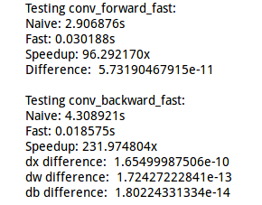
卷积的快速版本和原始版本比较
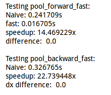
pooling的快速版本和原始版本比较
把卷积，pooling和relu组装在一起，代码已经实现，直接执行验证一下就好了
打开cs231n/cnn.py实现ThreeLayerConvNet
首先我们来看看这个网络的结构：
conv - relu - 2x2 max pool - affine - relu - affine - softmax
这个网络有三层，第一层是卷积-relu激活-max pooling。第二层是全连接层affine-relu激活，第三层是线性的affine加softmax
这个函数定义了网络的输入维度，卷积的filter个数，卷积的大小，全连接层隐单元个数，输出维度等。请仔细阅读代码中的注释。
def __init__(self, input_dim=(3, 32, 32), num_filters=32, filter_size=7,
hidden_dim=100, num_classes=10, weight_scale=1e-3, reg=0.0,
dtype=np.float32):
"""
初始化一个新的网络
输入:
- input_dim: 三元组 (C, H, W) 给定输入的Channel数，Height和Width
- num_filters: 卷积层的filter的个数（feature map）
- filter_size: filter的width和height，这里假设是一样的。
- hidden_dim: 全连接层hidden unit的个数
- num_classes: 输出的类别数
- weight_scale: 初始化weight高斯分布的标准差
- reg: L2正则化系数
- dtype: 浮点数的类型
"""
self.params = {}
self.reg = reg
self.dtype = dtype
############################################################################
# TODO: Initialize weights and biases for the three-layer convolutional #
# network. Weights should be initialized from a Gaussian with standard #
# deviation equal to weight_scale; biases should be initialized to zero. #
# All weights and biases should be stored in the dictionary self.params. #
# Store weights and biases for the convolutional layer using the keys 'W1' #
# and 'b1'; use keys 'W2' and 'b2' for the weights and biases of the #
# hidden affine layer, and keys 'W3' and 'b3' for the weights and biases #
# of the output affine layer. #
############################################################################
C, H, W = input_dim
self.params['W1'] = np.random.normal(0, weight_scale, (num_filters, C, filter_size, filter_size))
self.params['b1'] = np.zeros(num_filters)
self.params['W2'] = np.random.normal(0, weight_scale, (num_filters*H/2*W/2, hidden_dim))
self.params['b2'] = np.zeros(hidden_dim)
self.params['W3'] = np.random.normal(0, weight_scale, (hidden_dim, num_classes))
self.params['b3'] = np.zeros(num_classes)
############################################################################
# END OF YOUR CODE #
############################################################################
for k, v in self.params.iteritems():
self.params[k] = v.astype(dtype)
__init__主要的代码就是初始化三层卷积网络的参数W和b。
W1的shape是(num_filters, C, filter_size, filter_size)
b1的shape是(num_filters)
W2的shape是(num_filters
H/2
w/2, hidden_dim)，因为(C, H, W)经过卷积后变成(num_filters, H, W)【这里使用的padding方法使得输出的H和W保持不变】，在经过pooling后H，W减半【这里的pooling没有padding，2*2 pooling，stride是2】
b2的shape是(hidden_dim)
W3的shape是(hidden_dim, num_classes)
b3是(num_classes)
在ThreeLayerConvNet类里，我们把predict和loss合并成了一个函数。如果输入y不是None，我们就认为是loss，否则只进行forward部分【loss也要forward】，区别在于predict没有必要计算softmax，只需要计算最好一个affine就行了，原因是softmax是单调的，计算softmax后再挑选最大的那个下标和不计算softmax是一样的。
conv_out, conv_cache = conv_forward_fast(X, W1, b1, conv_param)
relu1_out, relu1_cache = relu_forward(conv_out)
pool_out, pool_cache = max_pool_forward_fast(relu1_out, pool_param)
affine_relu_out, affine_relu_cache = affine_relu_forward(pool_out, W2, b2)
affine2_out, affine2_cache = affine_forward(affine_relu_out, W3, b3)
scores = affine2_out
代码非常简单：
第一行是进行卷积，同时要保存cache，后面backward会用到
第二行是relu
第三行是max_pool
第四行是affine_relu，把affine和relu同时做了，当然分开也是可以的。
第五行是affine
if y is None:
return scores
接下来判断y是否None【也就是test还是train阶段】
loss, dscores = softmax_loss(scores, y)
loss += 0.5 * self.reg*(np.sum(self.params['W1']* self.params['W1'])
+ np.sum(self.params['W2']* self.params['W2'])
+ np.sum(self.params['W3']* self.params['W3']))
affine2_dx, affine2_dw, affine2_db = affine_backward(dscores, affine2_cache)
grads['W3'] = affine2_dw + self.reg * self.params['W3']
grads['b3'] = affine2_db
affine1_dx, affine1_dw, affine1_db = affine_relu_backward(affine2_dx, affine_relu_cache)
grads['W2'] = affine1_dw + self.reg * self.params['W2']
grads['b2'] = affine1_db
pool_dx = max_pool_backward_fast(affine1_dx, pool_cache)
relu_dx = relu_backward(pool_dx, relu1_cache)
conv_dx, conv_dw, conv_db = conv_backward_fast(relu_dx, conv_cache)
grads['W1'] = conv_dw + self.reg * self.params['W1']
grads['b1'] = conv_db
首先是调用softmax_loss函数
这个函数输入是最后一个affine的输出score和y计算出loss以及
然后loss记得加上L2正则化的部分
接下来的步骤就非常”机械“和简单了。
我们之 需要把forward的每个函数调用对应的back函数，
比如我们最后一句forward是：
affine2_out, affine2_cache = affine_forward(affine_relu_out, W3, b3)
那么对应的backward就是：
affine2_dx, affine2_dw, affine2_db = affine_backward(dscores, affine2_cache)
基本的”模板“就是
out, cache=xxx_forward(x,y,z)
dx,dy,dz=xxx_backward(dout, cache)
这里就不一一赘述细节了，有了dx，那么就可以把它保存到grads[‘x’]里，注意weight有正则化项
我们的代码写完了，怎么验证forward和backward呢？我们知道可以用数值梯度来验证梯度，所以这个还比较容易验证，那么forwar呢？之前的作业老师都准备好了一下单元测试的例子，给定x和y，我们实现的forward就是要通过x计算出y来。
但是如果我们自己设计一个网络，没有”参考答案”怎么验证呢？当然没法绝对的验证，但是可以做“sanity check”。什么意思？对于随机初始化的参数，我们让模型来分类，那么它应该是“乱猜”的，比如分类数是10，那么它分类的准确率应该是10%，loss应该是log(10)。当然reg不等于0，loss会更大一些。
因此运行cell13的结果类似下面的结果：
Initial loss (no regularization): 2.30258612067
Initial loss (with regularization): 2.50896273286
运行cell14：
W1 max relative error: 9.816730e-05
W2 max relative error: 3.816233e-03
W3 max relative error: 2.890462e-05
b1 max relative error: 6.426752e-05
b2 max relative error: 1.000000e+00
b3 max relative error: 1.013546e-09
关于gradient check。尽量用float64，因为32位浮点数的舍入误差会比较明显。另外就是复杂的网络最好分解成小的网络单个验证。后面我在实现VGG的网络时就发现如果网络非常深，数值梯度和我们计算的差别很大，我当时写完之后check不过，后来调试了半天也没发现问题，后来我把VGG简化成几层的网络，就能通过gradient check了。此外数值梯度的h也可能影响数值梯度。
为了验证我们的代码是否work，我们可以先用很少的训练数据来测试。模型应该要得到很高的训练数据上的准确率【当然测试数据会很低】
下面是测试的结果：
(Epoch 9 / 10) train acc: 0.790000; val_acc: 0.205000
(Iteration 19 / 20) loss: 0.659042
(Iteration 20 / 20) loss: 0.712001
(Epoch 10 / 10) train acc: 0.820000; val_acc: 0.225000
下面是训练和验证数据上的准确率图

在所有训练数据上训练，期望得到40%以上的分类准确率。
(Iteration 941 / 980) loss: 1.359960
(Iteration 961 / 980) loss: 1.461109
(Epoch 1 / 1) train acc: 0.476000; val_acc: 0.470000
代码作业已经提供，有兴趣的读者可以阅读怎么可视化的代码。
下面是结果：

前面我们实现了Batch Normalization。但是怎么把它用到卷积层呢？对于全连接层，我们对每一个激活函数的输入单独进行batch normalization。对于卷积层，它的输入是C × H × W 的图像，我们需要对一个Channel的图像进行batch normalization。
def spatial_batchnorm_forward(x, gamma, beta, bn_param):
Inputs:
- x: 输入数据shape (N, C, H, W)
- gamma: scale参数 shape (C,)
- beta: 平移参数 shape (C,)
- bn_param: Dictionary包括:
- mode: 'train' 或者 'test'; 必须有的
- eps: 保持数值计算稳定的一个很小的常量
- momentum: 计算running mean/variance的常量，前面也讲过。
如果momentum=0 那么每次都丢弃原来的值，只用当前最新值。
momentum=1 表示只用原来的值。默认0.9，大部分情况下不用修改
- running_mean: 数组 shape (D,) 保存当前的均值
- running_var 数组 shape (D,) 保存当前的方差
Returns a tuple of:
- out: 输出数据 shape (N, C, H, W)
- cache: 用于backward的cache
"""
out, cache = None, None
#############################################################################
# TODO: Implement the forward pass for spatial batch normalization. #
# #
# HINT: You can implement spatial batch normalization using the vanilla #
# version of batch normalization defined above. Your implementation should #
# be very short; ours is less than five lines. #
#############################################################################
N, C, H, W = x.shape
temp_output, cache = batchnorm_forward(x.transpose(0,2,3,1).reshape((N*H*W,C)), gamma, beta, bn_param)
out = temp_output.reshape(N,H,W,C).transpose(0,3,1,2)
#############################################################################
# END OF YOUR CODE #
#############################################################################
return out, cache
代码这样3行：
1, 通过x.shape获得输入的N, C, H, W代表batchSize，Channel数，Height和Width
2, 把(N, C, H, W)的4维tensor变成(N
H
W,C)的2维tensor。因为要把第二维C放到最后，所以首先transponse(0,2,3,1)把第二维放到第四维，然后原来的第三和四维分别变成第二和三维。然后在reshape成二维的(N
H
W, C)。这样就直接调用之前的batchnorm_forward。
transpose(0,2,3,1)的意思就是：把原来的第0维放到新的第0维【 不变】，把原来的第2维放到现在的第1维，把原来的第3维放到现在的第2维，把原来的第1维放到第3维。【主要这一段我说的时候下标是从0开始的了】
3, 计算完成后我们需要把它恢复成(N, C, H, W)的4维tensor
运行这cell进行测试：
Before spatial batch normalization:
Shape: (2, 3, 4, 5)
Means: [ 10.55377221 10.73790598 9.53943534]
Stds: [ 3.78632253 3.62325432 3.74675181]
After spatial batch normalization:
Shape: (2, 3, 4, 5)
Means: [ 5.66213743e-16 -1.38777878e-16 7.43849426e-16]
Stds: [ 0.99999965 0.99999962 0.99999964]
After spatial batch normalization (nontrivial gamma, beta):
Shape: (2, 3, 4, 5)
Means: [ 6. 7. 8.]
Stds: [ 2.99999895 3.99999848 4.99999822]
和forward很类似
N,C,H,W = dout.shape
dx_temp, dgamma, dbeta = batchnorm_backward_alt(dout.transpose(0,2,3,1).reshape((N*H*W,C)),cache)
dx = dx_temp.reshape(N,H,W,C).transpose(0,3,1,2)
下面是gradient check的结果：
dx error: 1.24124210224e-07
dgamma error: 1.440787364e-12
dbeta error: 1.19492399319e-11
这其实是一个开放的问题，这是一个很不错的问题。cifar10相对于mnist，分类数不变，但是分类难度要大不少。我们之前随便用一个3层的全连接网络就能实现95%以上的准确率，但是cifar10要实现这么高的准确率就不容易了。另一方面，相对于imagenet百万的训练数据，cifar的训练数据量只有50000，即使用十几层的卷积网络，在笔记本上训练几个小时也就收敛了。而训练imagenet即使用GPU也需要好几天才能收敛。所以用这个数据集来练手是个不错的选择。目前ResNet和Inception v4【不懂的读者不要着急，后面我们会简单的介绍它的思想，自己实现这种网络也不难】在这个数据上都能到95%以上的准确率。作业让我们达到65%的要求不算很高，读者可以尝试不同的网络层数，不同的dropout和learning_rate。
下面是我的一些调参经验：
1, learning_rate非常重要，刚开始要大，之后用lr_decay让它变小。如果发现开始loss下降很慢，那么可以调大这个参数。如果loss时而变大时而变小【当然偶尔反复是正常的】，那么可能是learning_rate过大了。
2, 最原始的sgd效果不好，最好用adam或者rmsprop再加上momentum
3, 如果训练准确率和验证准确率差距过大，说明模型过拟合了，可以增大L2正则化参数reg，另外使用dropout也是可以缓解过拟合的。
4, batch norm非常有用，尽量使用
5, 越深的网络效果越好，当然要求的参数也越多，计算也越慢。后面我们会介绍一些使得我们可以训练更深网络的方法，比如著名的152层的ResNet以及参数很少的Inception系列算法，这些方法是最近一两年在ImageNet上名列前茅。
我这里就介绍VGG网络结构，原文为 Very Deep Convolutional Networks for Large-Scale Image Recognition 。这种网络结构很简单，LSVRC14的比赛上取得了很好的成绩。这一年另外一个比较好的是GoogLeNet，也就是inception v1。LSVRC15上的冠军就是ResNet，之后inception发展到v2/3(v2和v3其实是一篇论文出来的)和v4。这基本就是Image Classification比较state of the art的一些方法了。后面我们会简单的介绍ResNet和Inception的基本思想，这里我们先介绍VGG和它的实现方法。
VGG其实也没有什么的新东西，就是使用3 × 3的卷积和pooling实现比较深(16-19)层【当然ResNet出来后就不敢说自己深了】的网络结构。
VGG的结构如下图：

它的特点是：
所有的卷积都是 3×3，padding是1，stride是1，这样保证卷积后图像的大小不变，把几个filter数量一样的几个conv-relu合成一组，最后再用pooling把图像大小减半，图像大小减半之后一般就会增加filter的数量。最后接几个全连接层，最后一层是softmax。
我这里用我们已有的基础代码简单的实现了一个支持batch normalization和dropout的VGG，代码细节就不赘述了，有兴趣的读者可以参考代码。
class VGGlikeConvNet(object):
"""
A flexible convolutional network with the following architecture:
[(CONV-SBN-RELU)*A-POOL]*B - (FC-BN-RELU)*K - SOFTMAX
The network operates on minibatches of data that have shape (N, C, H, W)
consisting of N images, each with height H and width W and with C input
channels.
"""
def __init__(self, input_dim=(3, 32, 32), num_filters=[64, 128, 256, 512, 512], filter_size=3,
hidden_dims=[1024, 1024], num_classes=10, weight_scale=1e-2, reg=1e-3,
As=[2,2,3,3,3],use_batchnorm=True,
dropout=0, dtype=np.float32, seed=None):
"""
Inputs:
- input_dim: Tuple (C, H, W) giving size of input data
- num_filters: A list of integers giving the filters to use in each "MAIN" convolutional layer
- filter_size: Size of filters to use in the convolutional layer
- hidden_dim: A list of integers giving the size of each hidden layer.
- num_classes: Number of scores to produce from the final affine layer.
- weight_scale: Scalar giving standard deviation for random initialization
of weights.
- reg: Scalar giving L2 regularization strength
- As: Numbers of "SUB" convolution-layer replications in each num_filter
- dtype: numpy datatype to use for computation.
"""
self.params = {}
self.reg = reg
self.dtype = dtype
self.use_dropout = dropout > 0
self.use_batchnorm = use_batchnorm
self.filter_size=filter_size
self.hidden_dims=hidden_dims
C, H, W = input_dim
self.num_filters=num_filters
self.As=As
# With batch normalization we need to keep track of running means and
# variances, so we need to pass a special bn_param object to each batch
# normalization layer. You should pass self.bn_params[0] to the forward pass
# of the first batch normalization layer, self.bn_params[1] to the forward
# pass of the second batch normalization layer, etc.
self.bn_params = {}
for i in range(1, len(num_filters)+1):
num_filter=num_filters[i-1]
for j in range(1, As[i-1]+1):
#debug
ss=str(i)+","+str(j)
print (H,W,C, num_filter, filter_size, filter_size)
self.params['W' + ss] = np.random.normal(0, weight_scale,
(num_filter, C, filter_size, filter_size))
self.params['b' + ss] = np.zeros(num_filter)
C=num_filter
if self.use_batchnorm:
self.params['beta' + ss] = np.zeros(num_filter)
self.params['gamma'+ ss]=np.ones(num_filter)
self.bn_params[ss]={'mode': 'train'}
#max-pooling size/=2
H/=2
W/=2
# full connected layers
for i in range(1, len(hidden_dims)+1):
layer_input_dim = C*H*W if i == 1 else hidden_dims[i - 2]
layer_output_dim = hidden_dims[i - 1]
print (layer_input_dim, layer_output_dim)
self.params['W' + str(i)] = np.random.normal(0, weight_scale, (layer_input_dim, layer_output_dim))
self.params['b' + str(i)] = np.zeros(layer_output_dim)
if self.use_batchnorm:
self.params['beta' + str(i)] = np.zeros(layer_output_dim)
self.params['gamma' + str(i)] = np.ones(layer_output_dim)
self.bn_params[str(i)]={'mode': 'train'}
# softmax layer
softmax_input_dim=hidden_dims[-1]
softmax_output_dim=num_classes
print (softmax_input_dim, softmax_output_dim)
self.params['W_softmax'] = np.random.normal(0, weight_scale, (softmax_input_dim, softmax_output_dim))
self.params['b_softmax'] = np.zeros(softmax_output_dim)
self.dropout_param = {}
if self.use_dropout:
self.dropout_param = {'mode': 'train', 'p': dropout}
if seed is not None:
self.dropout_param['seed'] = seed
# Cast all parameters to the correct datatype
for k, v in self.params.iteritems():
self.params[k] = v.astype(dtype)
def loss(self, X, y=None):
"""
Compute loss and gradient for the fully-connected net.
Input / output: Same as TwoLayerNet above.
"""
X = X.astype(self.dtype)
mode = 'test' if y is None else 'train'
# Set train/test mode for batchnorm params and dropout param since they
# behave differently during training and testing.
if self.dropout_param is not None:
self.dropout_param['mode'] = mode
if self.use_batchnorm:
for bn_param in self.bn_params:
self.bn_params[bn_param]['mode'] = mode
scores = None
conv_caches={}
relu_caches={}
bn_caches={}
affine_relu_caches={}
affine_bn_relu_caches={}
dropout_caches={}
pool_caches={}
conv_param = {'stride': 1, 'pad': (self.filter_size - 1) / 2}
# pass pool_param to the forward pass for the max-pooling layer
pool_param = {'pool_height': 2, 'pool_width': 2, 'stride': 2}
current_input = X
# conv layers
for i in range(1, len(self.num_filters)+1):
for j in range(1, self.As[i-1]+1):
ss=str(i) + "," +str(j)
keyW = 'W' + ss
keyb = 'b' + ss
if not self.use_batchnorm:
conv_out, conv_cache = conv_forward_fast(current_input, self.params[keyW], self.params[keyb], conv_param)
relu_out, relu_cache = relu_forward(conv_out)
conv_caches[ss]=conv_cache
relu_caches[ss]=relu_cache
current_input=relu_out
else:
key_gamma = 'gamma' + ss
key_beta = 'beta' + ss
conv_out, conv_cache = conv_forward_fast(current_input, self.params[keyW], self.params[keyb], conv_param)
bn_out, bn_cache=spatial_batchnorm_forward(conv_out, self.params[key_gamma], self.params[key_beta], self.bn_params[ss])
relu_out, relu_cache = relu_forward(bn_out)
conv_caches[ss] = conv_cache
relu_caches[ss] = relu_cache
bn_caches[ss] = bn_cache
current_input = relu_out
pool_out, pool_cache = max_pool_forward_fast(current_input, pool_param)
pool_caches[str(i)]=pool_cache
current_input=pool_out
# full connected layers
for i in range(1, len(self.hidden_dims) + 1):
keyW = 'W' + str(i)
keyb = 'b' + str(i)
if not self.use_batchnorm:
current_input, affine_relu_caches[i] = affine_relu_forward(current_input, self.params[keyW], self.params[keyb])
else:
key_gamma = 'gamma' + str(i)
key_beta = 'beta' + str(i)
current_input, affine_bn_relu_caches[i] = affine_bn_relu_forward(current_input, self.params[keyW],
self.params[keyb],
self.params[key_gamma], self.params[key_beta],
self.bn_params[str(i)])
if self.use_dropout:
current_input, dropout_caches[i] = dropout_forward(current_input, self.dropout_param)
# softmax
keyW = 'W_softmax'
keyb = 'b_softmax'
affine_out, affine_cache = affine_forward(current_input, self.params[keyW], self.params[keyb])
scores=affine_out
# If test mode return early
if mode == 'test':
return scores
loss, grads = 0.0, {}
loss, dscores = softmax_loss(scores, y)
# last layer:
affine_dx, affine_dw, affine_db = affine_backward(dscores, affine_cache)
grads['W_softmax'] = affine_dw + self.reg * self.params['W_softmax']
grads['b_softmax'] = affine_db
loss += 0.5 * self.reg * (np.sum(self.params['W_softmax'] * self.params['W_softmax']))
# full connected layers
for i in range(len(self.hidden_dims), 0, -1):
if self.use_dropout:
affine_dx = dropout_backward(affine_dx, dropout_caches[i])
if not self.use_batchnorm:
affine_dx, affine_dw, affine_db = affine_relu_backward(affine_dx, affine_relu_caches[i])
else:
affine_dx, affine_dw, affine_db, dgamma, dbeta = affine_bn_relu_backward(affine_dx, affine_bn_relu_caches[i])
grads['beta' + str(i)] = dbeta
grads['gamma' + str(i)] = dgamma
keyW = 'W' + str(i)
keyb = 'b' + str(i)
loss += 0.5 * self.reg * (np.sum(self.params[keyW] * self.params[keyW]))
grads[keyW] = affine_dw + self.reg * self.params[keyW]
grads[keyb] = affine_db
# conv layers
conv_dx=affine_dx
for i in range(len(self.num_filters), 0, -1):
dpool_out=conv_dx
conv_dx=max_pool_backward_fast(dpool_out, pool_caches[str(i)])
for j in range(self.As[i-1],0,-1):
ss=str(i) + "," +str(j)
keyW = 'W' + ss
keyb = 'b' + ss
if not self.use_batchnorm:
drelu_out=conv_dx
relu_cache=relu_caches[ss]
conv_cache=conv_caches[ss]
dconv_out=relu_backward(drelu_out, relu_cache)
conv_dx, conv_dw, conv_db=conv_backward_fast(dconv_out, conv_cache)
loss += 0.5 * self.reg * (np.sum(self.params[keyW] * self.params[keyW]))
grads[keyW] = conv_dw + self.reg * self.params[keyW]
grads[keyb] = conv_db
else:
key_gamma = 'gamma' + ss
key_beta = 'beta' + ss
drelu_out = conv_dx
relu_cache = relu_caches[ss]
conv_cache = conv_caches[ss]
bn_cache=bn_caches[ss]
dbn_out = relu_backward(drelu_out, relu_cache)
dconv_out, dgamma, dbeta=spatial_batchnorm_backward(dbn_out, bn_cache)
grads[key_beta] = dbeta
grads[key_gamma] = dgamma
conv_dx, conv_dw, conv_db = conv_backward_fast(dconv_out, conv_cache)
loss += 0.5 * self.reg * (np.sum(self.params[keyW] * self.params[keyW]))
grads[keyW] = conv_dw + self.reg * self.params[keyW]
grads[keyb] = conv_db
############################################################################
# END OF YOUR CODE #
############################################################################
return loss, grads
我没有使用太深的VGG，因为是在笔记本上跑，参数也没有仔细调过，跑了一下可以得到85%以上的准确率，有兴趣的读者可以自己调调网络层数和超参数，应该是有可能得到90%以上准确率的
model = VGGlikeConvNet(input_dim=(3, 32, 32), num_filters=[64, 64, 128, 256], filter_size=3,
hidden_dims=[64, 64], num_classes=10, weight_scale=1e-2, reg=1e-3, As=[2,2,3,3],
dropout=0.2,
dtype=np.float32)
solver=Solver(model, data,
num_epochs=10, batch_size=50,
update_rule='adam',
lr_decay=0.95,
optim_config={'learning_rate': 5e-4},
verbose=True, print_every=20)
solver.train()
下面是结果：
(Iteration 9741 / 9800) loss: 0.733453
(Iteration 9761 / 9800) loss: 0.645659
(Iteration 9781 / 9800) loss: 0.564387
(Epoch 10 / 10) train acc: 0.927000; val_acc: 0.854000
接下来我们介绍一下怎么用caffe训练ILSVRC2012。我们之前为了让大家理解卷积神经网络的细节原理，所以都是自己实现。但是在实际工作中，我们更倾向于使用成熟的框架来进行深度学习。caffe是一个老牌的深度学习框架，尤其是在计算机视觉领域很受欢迎。我们这里会简单的介绍一下怎么使用caffe训练ILSVRC2012，包括怎么用pycaffe使用训练好的模型，这在后面的Image Caption里会用到。
我们之前也多次提到这两个词，有时也不加区分的使用它们。这里我们稍微澄清一下它们的关系和区别。
首先ImangeNet是Stanford视觉实验室标注的一个图像数据库，有上万个分类和上千万的图片。截止到本文发表，最新的数据是“14,197,122 images, 21841 synsets indexed”。我们这个系列教程中多次涉及的课程cs231n就是stanford视觉实验室李飞飞教授开设的课程。
为了让学术界有个公开标准的图像分类【也包括Location】，Stanford视觉实验室从2010年开始就开始 ILSVRC(ImageNet Large Scale Visual Recognition Challenge)
，翻译成中文就是ImageNet大规模视觉竞赛。在2012年之前，最好的top5分类错误率在20%以上，而2012年AlexNet首次在比赛中使用了深层的卷积网络，取得了16%的错误率，一时让深度学习名声大噪。之后每年都有新的好成绩出现，2014年是GoogLeNet和VGG，而2015年是ResNet參差网络。目前最好系统的top5分类错误率在5%一下了。
ILSVRC2012是2012年的比赛数据，是最流行的一个大规模分类数据，它包含1000个分类和100,000+训练数据。
caffe是berkeley视觉实验室开源的一个流行深度学习框架，更多细节读者可以参考一些官网资料。因为本文的目的也不是介绍各种工具，为了避免文字过于冗长，就不仔细介绍了，下面介绍训练步骤时简要的做一些解释。读者有了自己实现CNN的基础，理解怎么使用caffe应该不会太难。安装【包括cuda的支持】请参考官网，建议读者用Ubuntu的系统，安装比较简单，记得安装python的支持。
最开始下载ILSVRC2012需要注册才能获得下载地址，现在已经完全开放，如果读者想训练ILSVRC2012，建议使用GPU，否则就得等几个月。另外机器要有比较大的硬盘空间来存放原始的数据【100多G】。
如果读者不打算自己训练，也不影响，因为网上有很多训练好的模型，我们可以直接拿过来用，因此可以跳过本节。
下载地址：http://www.image-net.org
/challenges/LSVRC/2012/nonpub-downloads
这个比赛包括分类和定位，由于我们只做分类，所以只需要下载
1,
Training images (Task 1 & 2)
138GB. MD5: 1d675b47d978889d74fa0da5fadfb00e
2,
Validation images (all tasks)
6.3GB. MD5: 29b22e2961454d5413ddabcf34fc5622
3,
Test images (all tasks)
13GB. MD5: fe64ceb247e473635708aed23ab6d839
4,
Training bounding box annotations (Task 1 & 2 only)
5,
Validation bounding box annotations (all tasks)
数据比较大，可能要下载一两天，用wget可以用-c选项支持断点续传。建议北京时间白天下载，对于美国来说是晚上，速度较快，最快可以到1MB/s。下载完了记得用md5检验一下
下载完了解就行了。
训练数据是这样的目录结果：/path/to/imagenet/train/n01440764/n01440764_10026.JPEG
其中n01440764就是代表一个类别，读者可以选择一些图片看看。
测试数据是：/path/to/imagenet/val/ILSVRC2012_val_00000001.JPEG
首先要下载一下辅助的数据，进入caffe的根目录执行
$./data/ilsvrc12/get_ilsvrc_aux.sh
这个脚本会下载一些数据到data/ilsvrc12。包括train.txt val.txt和test.txt，这些文件包含图片路径【相对路径】和分类的对应关系
由于图片的大小不一样，我们一般需要预先缩放图片。另外caffe使用leveldb来存储图片【为了统一管理和queue处理，上百G的图片不可能想mnist数据那样直接放到内存，我们只能把要训练的部分数据放到内存里，为了提供效率，那么需要队列这样的集中来prefetch图片到内存】，这都统一在脚本examples/imagenet/create_imagenet.sh里了。
我们需要修改一下这个脚本，主要是imagenet图片的位置，输出的目录。下面是我的配置，请参考后修改
EXAMPLE=/bigdata/lili/imagenet
DATA=data/ilsvrc12
TOOLS=build/tools
TRAIN_DATA_ROOT=/bigdata/lili/imagenet/train/
VAL_DATA_ROOT=/bigdata/lili/imagenet/val/
# Set RESIZE=true to resize the images to 256x256. Leave as false if images have
# already been resized using another tool.
RESIZE=true
然后在caffe的根目录运行这个脚本，注意这个脚本可能要运行好几个小时【我记不清楚了，反正第一天运行第二天才完成】
就像batch normaliztion一样，我们一般需要把数据变成均值0的数据，计算mean就是这个用途。
./examples/imagenet/make_imagenet_mean.sh
这个脚本将生成data/ilsvrc12/imagenet_mean.binaryproto这个文件
注意：我使用这个脚本生成的mean文件训练时不收敛，不知道什么原因，去caffe的论坛发现别人也有碰到类似的问题，请参考
https://github.com/BVLC/caffe/issues/5212和https://github.com/BVLC/caffe/issues/4482。
我后来之后上网下载了一个mean文件就能训练了。需要的读者可以从这里下载：http://dl.caffe.berkeleyvision.org
/caffe_ilsvrc12.tar.gz，解压后就有imagenet_mean.binaryproto，放到data/ilsvrc12/下就行了。
修改训练和测试的source：
data_param {
#source: "examples/imagenet/ilsvrc12_train_lmdb"
source: "/bigdata/lili/imagenet/ilsvrc12_train_lmdb"
batch_size: 32
backend: LMDB
}
data_param {
#source: "examples/imagenet/ilsvrc12_val_lmdb"
source: "/bigdata/lili/imagenet/ilsvrc12_val_lmdb"
batch_size: 50
backend: LMDB
}
修改模型snapshot目录的位置：
snapshot_prefix: "/bigdata/lili/imagenet/googlenetmodel/bvlc_googlenet"
./build/tools/caffe train –solver=models/bvlc_reference_caffenet/solver.prototxt
如果是一个GPU，一般两三天也就收敛了，我最终得到的准确率在58%左右。
caffe代码里包含一个examples/00-classification.ipynb。我们用ipython notebook就可以像之前那样工作了。当然很可能我们是在某个GPU服务器上训练的数据，包括那些图片也放在上面，那么我们可以使用ipython的 –ip参数让ipython监听在非localhost上，这样我们使用笔记本也可以访问【这其实是ipython notebook好用之处，我们不需要在服务器上用vim编写代码或者在本地和服务器直接拷贝代码了，我们用这种方式就可以在本地笔记本开发python代码，而直接在服务器上调试和运行了】
ipython notebook –ip 这个机器的内网或者外网ip
启动后在终端会出现带token的链接：
http://xxxx:8888/?token=35f30c22abf0a6c5d755e631cac5e7a9444aac829a5082b
这就在笔记本打开这个链接就行了。
初始化的代码，直接运行
设置caffe_root。直接运行应该就可以，如果有路径问题修改caffe_root为caffe的绝对路径肯定是不会有问题的。
下载模型，如果你训练了自己的模型，可以跳过这一步，否则这段代码会去下载网上已有的模型。注意模型上百M
定义和加载模型。如果你使用自己训练的模型，可以参考我的修改，否则不需要更改直接运行。
model_weights = '/bigdata/lili/imagenet/models2/caffenet_train_iter_160000.caffemodel'
数据预处理对象caffe.io.Transformer
Our default CaffeNet is configured to take images in BGR format. Values are expected to start in the range [0, 255] and then have the mean ImageNet pixel value subtracted from them. In addition, the channel dimension is expected as the first (outermost) dimension.
默认的CaffeNet是使用BGR格式的图像【这和我们一般图像处理工具得到RBG是不一样的】。并且取值是0-255【另外一种表示方法就是0-1】，然后会减去RGB的平均值。另外Caffe的Blob是(N, C, H, W)的，我们从图像里得到的一般是(H, W, C)。
所以需要经过预处理把我们读到的数据转成Caffe需要的格式。Caffe提供了一个类caffe.io.Transformer，我们直接用这个类就可以方便的完成这些工作【当然你自己实现也是完全没有问题的，那么不需要这个类了】
# load the mean ImageNet image (as distributed with Caffe) for subtraction
mu = np.load(caffe_root + 'python/caffe/imagenet/ilsvrc_2012_mean.npy')
mu = mu.mean(1).mean(1) # average over pixels to obtain the mean (BGR) pixel values
print 'mean-subtracted values:', zip('BGR', mu)
# create transformer for the input called 'data'
transformer = caffe.io.Transformer({'data': net.blobs['data'].data.shape})
transformer.set_transpose('data', (2,0,1)) # move image channels to outermost dimension
transformer.set_mean('data', mu) # subtract the dataset-mean value in each channel
transformer.set_raw_scale('data', 255) # rescale from [0, 1] to [0, 255]
transformer.set_channel_swap('data', (2,1,0)) # swap channels from RGB to BGR
前面3行是读取mean文件。
第一行是读取mean文件，得到一个(3,256,256)的ndarray，代表BGR3个channel在每个像素点的平均值。
但是我们使用的时候是对每个channel减去同一个值域【不是每个位置减不同的值】，所以我们需要平均每个channel的256*256个值，这就可以用第二行代码mu=mu.mean(1).mean(1)来完成，这行代码的意思就是先对H求平均，得到一个(3,256)的ndarray，然后在对W求平均【注意这个时候H的维度下标从2变成1了】
其实用mu.mean(2).mean(1)也是等价的。总之就是对每个channel的256个值求平均。
第三行只是打印出来看看，我这里打印出来是：
mean-subtracted values: [('B', 104.0069879317889), ('G', 116.66876761696767), ('R', 122.6789143406786)]
接下来构造一个caffe.io.Transformer对象，它变化的数据是输入层net.blobs[‘data’].data，所以它变换的数据的shape是net.blobs[‘data’].data.shape
对caffe不熟悉的读者可以阅读一下caffe的官方文档。
我们【下面】代码读入的图片是(N, H, W, C)的ndarray，如果一次读取一个图片，那么N就是1，H和W分别是图片的高度和宽度，而C就是3代表RGB
但是Caffe要求(N, C, H, W)，所以需要下面这个transpose：
transformer.set_transpose('data', (2,0,1))
接下来这行transformer.set_mean(‘data’, mu) 告诉它要减去我们之前得到的BGR3个channel的均值
而transformer.set_raw_scale(‘data’, 255) 让它把0-1的范围缩放到0-255。
最后因为我们读入的channel顺序是RGB，而caffe要求BGR，所以再加上最后这一行：
transformer.set_channel_swap('data', (2,1,0))
这个cell显示了我们一次分类多个数据，其实也可以把batch改成1,这里只是为了演示可以一次分类多个，这会比一次分类一个加起来快。
# set the size of the input (we can skip this if we're happy
# with the default; we can also change it later, e.g., for different batch sizes)
net.blobs['data'].reshape(50, # batch size
3, # 3-channel (BGR) images
227, 227) # image size is 227x227
注意，我们之前训练imagenet时会把图像缩放成227*227的，参考models/bvlc_reference_caffenet/train_val.prototxt：
layer {
name: "data"
type: "Data"
top: "data"
top: "label"
include {
phase: TRAIN
}
transform_param {
mirror: true
crop_size: 227
mean_file: "data/ilsvrc12/imagenet_mean.binaryproto"
}
接下来我们从example里读取一个图片，这是一只很可爱的猫。
image = caffe.io.load_image(caffe_root + 'examples/images/cat.jpg')
transformed_image = transformer.preprocess('data', image)
plt.imshow(image)
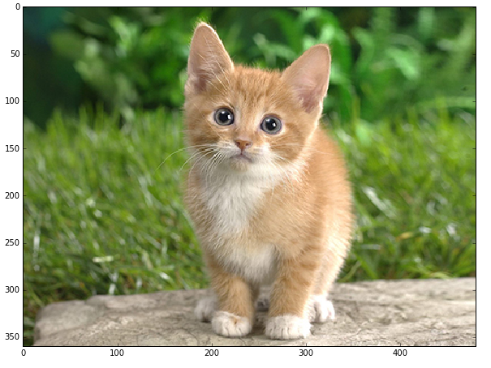
我们用模型来预测：
# copy the image data into the memory allocated for the net
net.blobs['data'].data[...] = transformed_image
### perform classification
output = net.forward()
output_prob = output['prob'][0] # the output probability vector for the first image in the batch
print 'predicted class is:', output_prob.argmax()
其实就是把data输入层放置成我们的这个图片，注意，我们之前定义的输入是(50,3,227,227)，但是我们这里只传了一张(1,3,227,227)的图片，所以它会broadcasting成50个一样的图片，当然实际我们应该传人50个不同的图片。这里当然只是个演示。
然后直接调用net.forward()，然后取出output['prob'][0]，得到第一个图片的输出概率。这个prob在哪里定义的呢？感兴趣的读者可以打开models/bvlc_reference_caffenet/deploy.prototxt阅读。
注意，我们训练和测试的时候用的是models/bvlc_reference_caffenet/train_val.prototxt，那个时候我们只关心loss(train phase)和accuracy(test phase)。而真正用来预测的时候，我们关心的是softmax的输出概率。
如果模型训练的没有问题的话，这只猫的分类应该是：
predicted class is: 281
再往下面的内容这个系列教程不会用到，我们只要能够读取caffe的model，然后用它来预测就可以了，所以后面的cell就不一一介绍了，感兴趣的读者可以自行阅读。
ResNet注意可以参考两篇论文： Deep Residual Learning for Image Recognition 和 Identity Mappings in Deep Residual Networks 。 这里 有不少有用的链接，包括icml16上的tutorial和一些ResNet的实现代码。
ResNet是Residual Network的缩写，翻译成中文就是残差网络。在介绍这种网络结构之前，我们来回顾一下之前的经验。
根据之前的经验，神经网络越深，效果越好。但是网络变深了之后就不好优化，模型训练时不容易收敛，当然我们可以用一些参数初始化和batch normalization的技术让我们可以训练较深的网络，比如十几层的VGG。
另外本文作者还提出了一个有意思的现象degradation问题——网络变得非常深以后，效果反而不如浅层的网络，甚至在训练数据上都不如（因此不是overfitting的问题）。【注：Inception v4那篇论文里作者似乎不太同意这个观点，他们没有用残差结构也能训练很深的网络，这说明本文作者参数没调好导致没收敛？但是他还是承认使用了残差结构确实可以加快训练的收敛速度】
作者在cifar10数据集行比较了，下图说明如果不用残差网络，深的网络效果反而不如浅的。
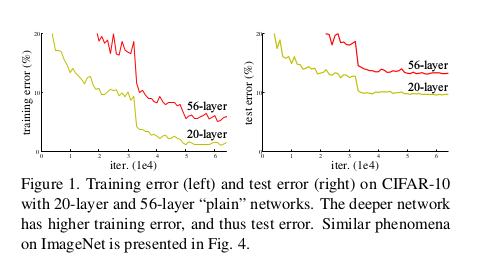
56层的网络效果反而不如20层的。作者在ImageNet上也发现同样的现象。
我觉得可能原因是网络层数多，参数多，不使用ResNet比较难收敛。
为了解决训练收敛慢的问题，作者提出了残差结构的想法。
这个想法非常简单。比如一个网络（比如是两个卷积加relu）需要学习（拟合）一个H(x)函数，之前我们就是直接学习函数H(x)。而残差网络让它学习另外一个函数F(x)=H(x)-x。如下图所示：
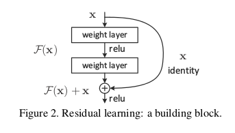
图上在输入和第二个relu之间增加了一个x的直接连接。当然这里要求x的维度和F(x)是一样的，否则没法相加，这种情况一般会给x再乘以一个W使得Wx的维度和F(x)一样。
就是这么一点点改动，作者通过实验验证效果就是比没有改动要好。
首先作者在ImageNet上训练了普通的34层的网络，然后又训练了加入残差的34层网络，另外使用了VGG18作为baseline，同时也训练了带残差的18层网络，实验对比如下：

可以看到，没有残差结果，34层的网络还不如18层。加了残差之后，34层的要比18层的好，当然18层的残差网络也比普通的18层VGG好。
之后就是训练了著名的152层的网络，在ILSVRC15上top5的error讲到了3.57%
不过15年的文章并没有怎么解释为什么加了这样的残差结构就能训练更深的网络，只是实验验证了想法而已。
16年的文章做了更深入一些的分析，分析为什么加入残差结构能使得训练更深的网络变得可能。
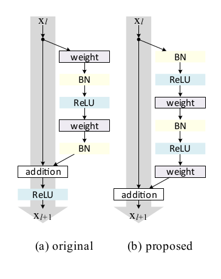
如上图(a)所示残差网络就是许多残差单元(Residual Units)组成的网络。每个残差单元都是这样的形式：
其中输入是
在15年的文章里，
这里我们先做一些简化，假设
我们任意考察残差网络的第l层到第L层。
这里我们能发现这种结构很好的一些特性：
1, 任意更深的L层
2,
如果我们用error对
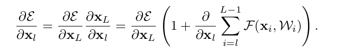
因为公式复杂那一项不会总是-1，因此error从L层
前面我们假设
经过简单的推导，我们得到：
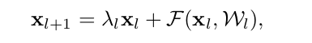


我们看到括号里不是1而是
出来Identity map也就是
基于之上的分析，作者提出了下图b的新结构：
图a是15年的工作，从第l层直接没有到l+1层的信息通路，因为这条通路要经过ReLU，不过可能ReLU至少在大于0时是完全可以通过的【不知道换成softmax会不会效果差很多，因为15年的文章没有用过做实验，也不好猜测】
而图b从l层到l+1层是有直接信息通路的，效果会更好。
大致的思路就讲到这里吧，如果要自己实现应该也很简单，有兴趣的读者可以自己实现一个ResNet在cifar数据上跑一跑。论文最好的结果是小于5%的错误率。上面的链接里也有很多现成的ResNet实现，读者可以参考。
主要是
Going Deeper with Convolutions
Rethinking the Inception Architecture for Computer Vision
Inception-v4, Inception-ResNet and the Impact of Residual Connections on Learning
这三篇论文。
第一篇就是inception v1，也就是GoogLeNet。
第二篇是v2和v3，第三篇是v4。
第一篇和ResNet一样，没有太多理论依据，只是实验，建议大致阅读一下，重点阅读第二篇。
首先是Inception这个词。《盗梦空间》？这个单词的意思是”起初“，”获得学位“。
这似乎和电影的情节没半毛钱关系，台湾翻译成《全面启动》就是这个单词的直接翻译，不过
知乎的这个解释
还是有些道理的。我不知道作者把这样的网络结构叫做Inception是什么意思。
Inception结构的基本思想就是用小的filter组合来替代大的filter，从而减少参数和计算量，这样相同的计算资源也就能训练更深的网络，另外一个好处就是在一些终端设备占用的内存和cpu更少。
我们看到，VGG都是使用3
3的filter，小的filter参数少，但是小的filter不能capture远距离的依赖，相当于损失了模型的表达能力。虽然我们设计网络是层次的，前面的层学习底层的特征，然后后面的层学习更高的特征。但是即使是底层特征，可能有些也没法用太小的filter来学到。所以最早的设计直觉是前面用比较大的filter比如7
7的，随着图片的变小和网络的加深，我们再使用更多更小的filter。我们可以看到7
7的计算量是3
3的5.4倍。
inception的想法就是用多个小的filter来替代大的filter。
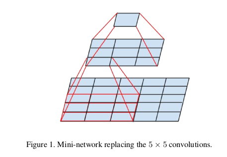
我们可以用两个3
3的filter stack起来替代一个5
5的filter，当然它们不是完全等价的，因为上层的3
3filter移动一步之后和之前是有重叠的部分的。
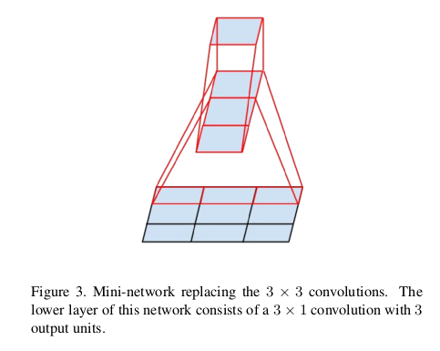
另外如上图，我们也可以用一些非对称的比如1
3和3
1的filter组合起来替代3
3的filter
此外还有就是1 1的filter也是有用的，它可以起到”降维“压缩信息的作用，比如输入是(C1,H,W)，用C2个1 1的filter后就变成了(C2,H,W)的图像。这种压缩的特点是卷积的局部的特性。
大概的思路就是这样，细节就不罗嗦了，有兴趣的读者请参考论文。
通过上面的介绍，我们大致了解了Image Classification里最主流和state of the art的一些卷积网络结构，当然这只是视觉的一个任务，这里没有涉及到Location/Detection和Segmentation等其它任务，所以也没有设计R-CNN fast/faster R-CNN，YOLO SSD等。有兴趣的读者有了上面的基础应该是可以阅读相关的论文了解它们的原理。关于卷积神经网络的内容就介绍到这里，下一篇文章将会讲解RNN/LSTM的相关内容，敬请关注！